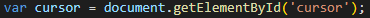

El cursor ha cambiado su estilo. Para realizar este efecto habrá que seguir los siguientes pasos:
Crear un div con la id "cursor":
A continuación crear una variable que recoja el elemento con la id "cursor".
El próximo paso será crear el addEvent.Listener() con el evento mousemove.
Este evento contendrá una función que detecte la posición del ratón en la pantalla y la vaya actualizando según el movimiento.
El último paso será modificar el css. En este caso el código es el siguiente: